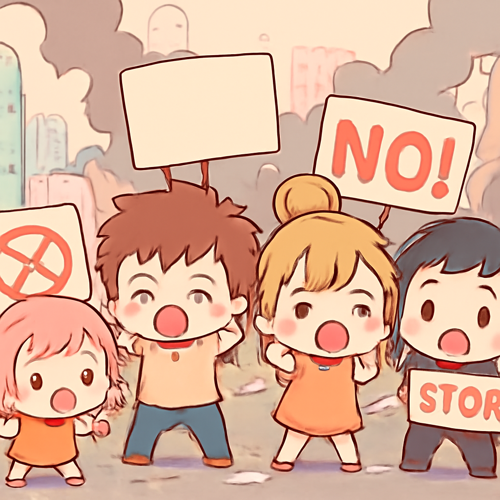
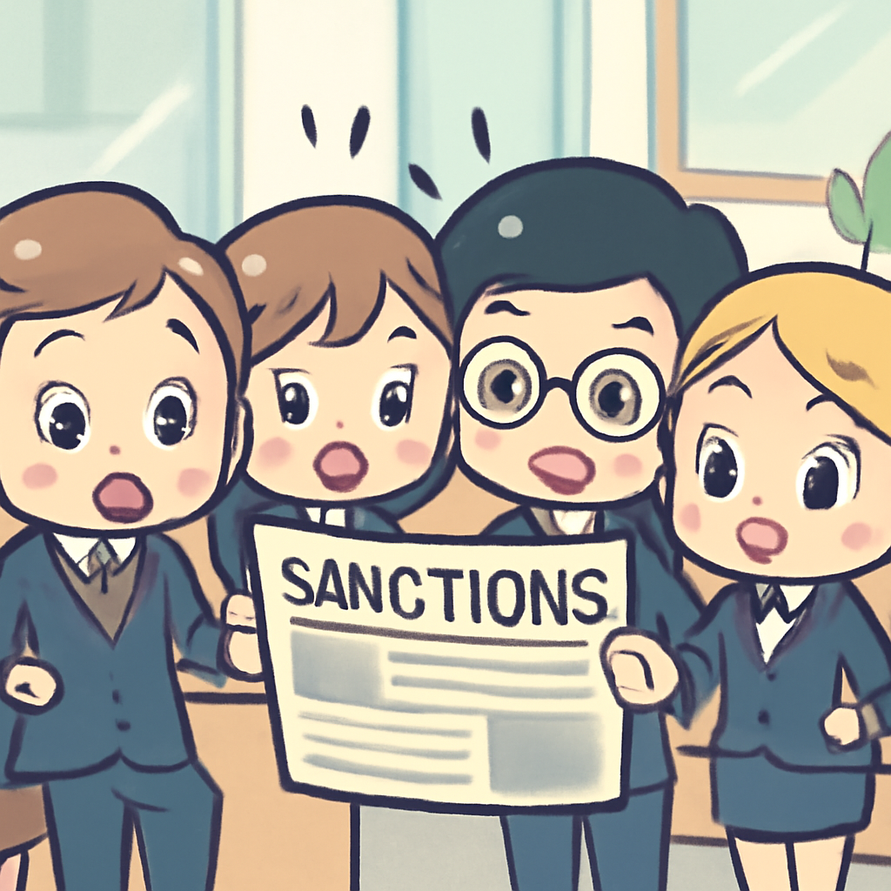

其一 · 法國巴黎 · 反對生活成本抗議引發暴力衝突
法國各地爆發抗議，數千人被捕。

在法國，數十萬人上街抗議生活成本上漲，卻引發了暴力衝突，超過一千人被逮捕。這場抗議活動顯示出民眾對經濟困境的不滿，也讓政府面臨壓力。未來可能會有更多抗議活動，讓當局感到頭痛。經濟狀況不佳，大家的心情也跟著變差，真是一個循環啊。
🔗 原始新聞 ↗
2026-10-18 · 以古觀今，以笑抗愁
法國各地爆發抗議，數千人被捕。

在法國，數十萬人上街抗議生活成本上漲，卻引發了暴力衝突，超過一千人被逮捕。這場抗議活動顯示出民眾對經濟困境的不滿，也讓政府面臨壓力。未來可能會有更多抗議活動，讓當局感到頭痛。經濟狀況不佳，大家的心情也跟著變差，真是一個循環啊。
🔗 原始新聞 ↗
印度加爾各答宗教慶典踩踏事件造成17人死亡。
在印度加爾各答，一場慶祝活動發生了悲劇，造成至少17人死亡，數十人受傷。事件發生在一個人潮洶湧的宗教慶典上，許多人因為擔心踩踏而驚慌失措。這樣的事件在印度時有發生，讓人心痛，也提醒大家在大型活動中要更加小心，安全第一。
🔗 原始新聞 ↗
以色列西岸出現極端暴力，外交官遭攻擊。
在以色列西岸，極端定居者襲擊了一些歐洲外交官，造成緊張局勢升級。以色列軍方譴責這一暴力行為，但總理辦公室卻指責這是抹黑運動。國際社會對此表示擔憂，這可能會影響到以巴和平進程的未來，大家都在密切關注情況的發展。
🔗 原始新聞 ↗
特朗普暫時解除對俄制裁，引發高度關注。

美國總統特朗普最近決定暫時解除許多對俄羅斯的制裁，這一舉動引發了國內外的廣泛關注。制裁原本是出於國家安全考量，但現在的變化讓人擔心是否會影響美俄關係以及國際局勢。特朗普似乎更想要讓俄羅斯回到「朋友圈」，但這樣的決定會不會讓其他國家捏一把冷汗呢？
🔗 原始新聞 ↗
巴西亞馬遜森林砍伐率大幅下降，為環保帶來希望。
在巴西，亞馬遜森林的砍伐率創下新低，這對於抗擊氣候變化來說是一個好消息。這一變化發生在即將舉行的選舉前，反映出新政府對環境保護的重視。希望這能成為全球環保的榜樣，讓人們看到保護地球的希望。也許未來的森林會更茂密，而我們的空氣也將更清新！
🔗 原始新聞 ↗